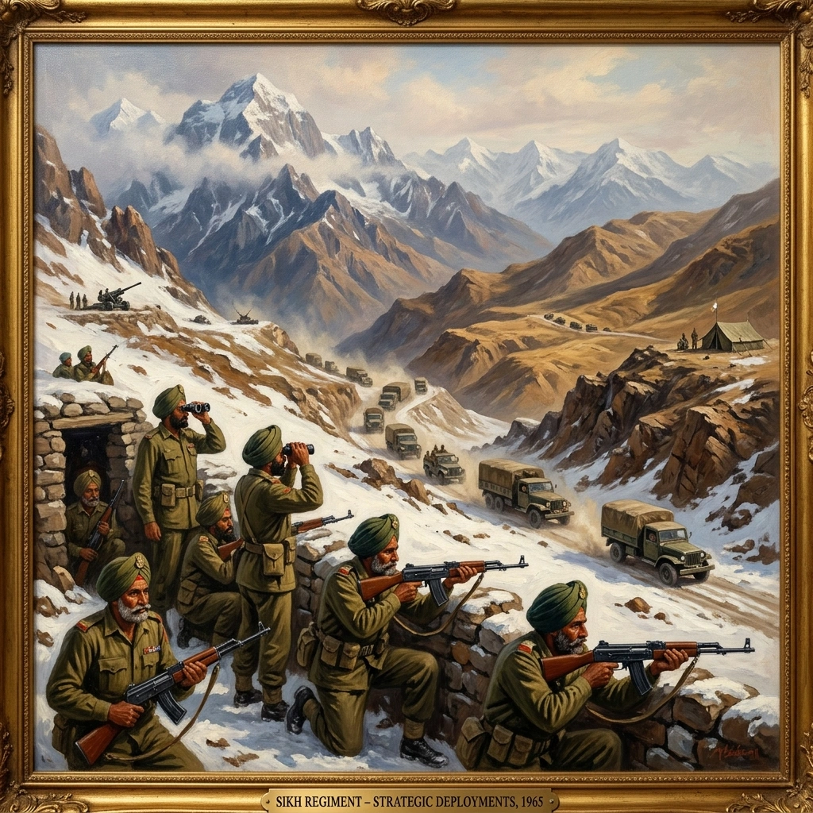

ਆਉਣ ਵਾਲੇ ਸੰਘਰਸ਼ ਲਈ ਮੌਕਾ ਬਣਾਉਣਾ


ਸਿਰਲੇਖ: Positioning for the Coming Conflict
ਸ਼੍ਰੇਣੀ: Positioning for the Coming Conflict
ਕਲਾਕਾਰ: ਸਿੱਖ ਰੈਜੀਮੈਂਟal Centre
ਸਾਲ: ਇਤਿਹਾਸਕ
ਸ਼੍ਰੇਣੀ: Positioning for the Coming Conflict
ਕਲਾਕਾਰ: ਸਿੱਖ ਰੈਜੀਮੈਂਟal Centre
ਸਾਲ: ਇਤਿਹਾਸਕ
ਆਉਣ ਵਾਲੇ ਸੰਘਰਸ਼ ਲਈ ਮੌਕਾ ਬਣਾਉਣਾ
ਅਕਤੂਬਰ 1964 ਤੱਕ, 1 ਸਿੱਖ ਤੰਗਧਾਰ ਸੈਕਟਰ ਵਿੱਚ ਚਮਕਕੋਟ ਵਿਖੇ ਆਪਣੇ ਪੁਰਾਣੇ ਯੁੱਧ ਦੇ ਮੈਦਾਨ ਵਿੱਚ ਵਾਪਸ ਆ ਗਿਆ ਸੀ। ਲੈਫਟੀਨੈਂਟ ਕਰਨਲ ਆਰ.ਡਬਲਯੂ. ਐਮਰੀ ਨੇ ਜੁਲਾਈ 1965 ਵਿੱਚ ਕਮਾਂਡ ਸੰਭਾਲੀ, ਜਦੋਂ ਬਟਾਲੀਅਨ ਨੂੰ 7.62 ਐਮਐਮ ਦੀਆਂ ਸਵੈ-ਲੋਡਿੰਗ ਰਾਈਫਲਾਂ ਵੀ ਮਿਲੀਆਂ। 2 ਸਿੱਖ ਸ਼ਿਮਲਾ ਤੋਂ ਚਾਰ ਦਿਨਾਂ ਦੇ ਔਖੇ ਮਾਰਚ ਤੋਂ ਬਾਅਦ 17,000 ਫੁੱਟ ਦੀ ਉਚਾਈ 'ਤੇ ਪਿਕਕੇਟ ਦਾ ਪ੍ਰਬੰਧ ਕਰਦੇ ਹੋਏ ਭਾਰਤ-ਤਿੱਬਤ ਸਰਹੱਦ ਦੇ ਨਵੇਂ ਸਰਗਰਮ "S" ਸੈਕਟਰ ਵਿੱਚ ਤਾਇਨਾਤ ਸਨ। ਅਗਸਤ 1965 ਵਿਚ ਲੈਫਟੀਨੈਂਟ ਕਰਨਲ ਐਨ.ਐਨ. ਖੰਨਾ, ਜੰਮੂ ਚਲਾ ਗਿਆ। ਆਪ੍ਰੇਸ਼ਨ ਵਿਜੇ ਤੋਂ ਬਾਅਦ, 3 ਸਿੱਖ ਅੰਬਾਲਾ ਵਾਪਸ ਆ ਗਏ ਅਤੇ ਅਗਸਤ 1962 ਵਿੱਚ ਗੁਰੇਜ਼-ਕਾਂਜ਼ਲਵਾਨ ਸੈਕਟਰਾਂ ਵਿੱਚ ਜੰਗਬੰਦੀ ਲਾਈਨ ਰੱਖਣ ਲਈ ਚਲੇ ਗਏ। ਦਸੰਬਰ 1963 ਵਿੱਚ, ਜੁਲਾਈ 1965 ਵਿੱਚ ਫਿਰੋਜ਼ਪੁਰ ਜਾਣ ਤੋਂ ਪਹਿਲਾਂ ਨਾਗਾ ਦੁਸ਼ਮਣਾਂ ਵਿਰੁੱਧ ਲਗਾਤਾਰ ਤਲਾਸ਼ੀ ਅਭਿਆਨ ਚਲਾਉਂਦੇ ਹੋਏ, 4 ਸਿੱਖ ਆਪ੍ਰੇਸ਼ਨ ORCHID ਲਈ ਨਾਗਾਲੈਂਡ ਵਿੱਚ ਦਾਖਲ ਹੋਏ। ਆਜ਼ਾਦੀ ਤੋਂ ਬਾਅਦ ਦੀਆਂ ਬਟਾਲੀਅਨਾਂ, 16 ਸਿੱਖ, 17 ਸਿੱਖ ਅਤੇ 18 ਸਿੱਖ, 1962 ਦੀ ਜੰਗ ਤੋਂ ਖੁੰਝ ਗਏ ਸਨ। ਅਪ੍ਰੈਲ 1965 ਵਿਚ ਕੱਛ ਦੇ ਰਣ ਦੇ ਟਕਰਾਅ ਦੌਰਾਨ, 18 ਸਿੱਖ ਥੋੜ੍ਹੇ ਸਮੇਂ ਵਿਚ ਹੀ ਇਕੱਠੇ ਹੋਏ, ਪਹਿਲਾਂ ਪੂਰਬੀ ਪਾਕਿਸਤਾਨ ਦੀ ਸਰਹੱਦ ਅਤੇ ਫਿਰ ਉੱਤਰੀ ਸਿੱਕਮ ਵੱਲ ਚਲੇ ਗਏ। 1965 ਦੇ ਅੱਧ ਤੱਕ, ਰੈਜੀਮੈਂਟ ਦੀਆਂ ਬਟਾਲੀਅਨਾਂ ਦੇਸ਼ ਭਰ ਵਿੱਚ ਤਾਇਨਾਤ ਸਨ, ਜੋ ਕਿ ਸ਼ੁਰੂ ਹੋਣ ਵਾਲੇ ਸੰਘਰਸ਼ ਲਈ ਤਿਆਰ ਸਨ।
ਅਕਤੂਬਰ 1964 ਤੱਕ, 1 ਸਿੱਖ ਤੰਗਧਾਰ ਸੈਕਟਰ ਵਿੱਚ ਚਮਕਕੋਟ ਵਿਖੇ ਆਪਣੇ ਪੁਰਾਣੇ ਯੁੱਧ ਦੇ ਮੈਦਾਨ ਵਿੱਚ ਵਾਪਸ ਆ ਗਿਆ ਸੀ। ਲੈਫਟੀਨੈਂਟ ਕਰਨਲ ਆਰ.ਡਬਲਯੂ. ਐਮਰੀ ਨੇ ਜੁਲਾਈ 1965 ਵਿੱਚ ਕਮਾਂਡ ਸੰਭਾਲੀ, ਜਦੋਂ ਬਟਾਲੀਅਨ ਨੂੰ 7.62 ਐਮਐਮ ਦੀਆਂ ਸਵੈ-ਲੋਡਿੰਗ ਰਾਈਫਲਾਂ ਵੀ ਮਿਲੀਆਂ। 2 ਸਿੱਖ ਸ਼ਿਮਲਾ ਤੋਂ ਚਾਰ ਦਿਨਾਂ ਦੇ ਔਖੇ ਮਾਰਚ ਤੋਂ ਬਾਅਦ 17,000 ਫੁੱਟ ਦੀ ਉਚਾਈ 'ਤੇ ਪਿਕਕੇਟ ਦਾ ਪ੍ਰਬੰਧ ਕਰਦੇ ਹੋਏ ਭਾਰਤ-ਤਿੱਬਤ ਸਰਹੱਦ ਦੇ ਨਵੇਂ ਸਰਗਰਮ "S" ਸੈਕਟਰ ਵਿੱਚ ਤਾਇਨਾਤ ਸਨ। ਅਗਸਤ 1965 ਵਿਚ ਲੈਫਟੀਨੈਂਟ ਕਰਨਲ ਐਨ.ਐਨ. ਖੰਨਾ, ਜੰਮੂ ਚਲਾ ਗਿਆ। ਆਪ੍ਰੇਸ਼ਨ ਵਿਜੇ ਤੋਂ ਬਾਅਦ, 3 ਸਿੱਖ ਅੰਬਾਲਾ ਵਾਪਸ ਆ ਗਏ ਅਤੇ ਅਗਸਤ 1962 ਵਿੱਚ ਗੁਰੇਜ਼-ਕਾਂਜ਼ਲਵਾਨ ਸੈਕਟਰਾਂ ਵਿੱਚ ਜੰਗਬੰਦੀ ਲਾਈਨ ਰੱਖਣ ਲਈ ਚਲੇ ਗਏ। ਦਸੰਬਰ 1963 ਵਿੱਚ, ਜੁਲਾਈ 1965 ਵਿੱਚ ਫਿਰੋਜ਼ਪੁਰ ਜਾਣ ਤੋਂ ਪਹਿਲਾਂ ਨਾਗਾ ਦੁਸ਼ਮਣਾਂ ਵਿਰੁੱਧ ਲਗਾਤਾਰ ਤਲਾਸ਼ੀ ਅਭਿਆਨ ਚਲਾਉਂਦੇ ਹੋਏ, 4 ਸਿੱਖ ਆਪ੍ਰੇਸ਼ਨ ORCHID ਲਈ ਨਾਗਾਲੈਂਡ ਵਿੱਚ ਦਾਖਲ ਹੋਏ। ਆਜ਼ਾਦੀ ਤੋਂ ਬਾਅਦ ਦੀਆਂ ਬਟਾਲੀਅਨਾਂ, 16 ਸਿੱਖ, 17 ਸਿੱਖ ਅਤੇ 18 ਸਿੱਖ, 1962 ਦੀ ਜੰਗ ਤੋਂ ਖੁੰਝ ਗਏ ਸਨ। ਅਪ੍ਰੈਲ 1965 ਵਿਚ ਕੱਛ ਦੇ ਰਣ ਦੇ ਟਕਰਾਅ ਦੌਰਾਨ, 18 ਸਿੱਖ ਥੋੜ੍ਹੇ ਸਮੇਂ ਵਿਚ ਹੀ ਇਕੱਠੇ ਹੋਏ, ਪਹਿਲਾਂ ਪੂਰਬੀ ਪਾਕਿਸਤਾਨ ਦੀ ਸਰਹੱਦ ਅਤੇ ਫਿਰ ਉੱਤਰੀ ਸਿੱਕਮ ਵੱਲ ਚਲੇ ਗਏ। 1965 ਦੇ ਅੱਧ ਤੱਕ, ਰੈਜੀਮੈਂਟ ਦੀਆਂ ਬਟਾਲੀਅਨਾਂ ਦੇਸ਼ ਭਰ ਵਿੱਚ ਤਾਇਨਾਤ ਸਨ, ਜੋ ਕਿ ਸ਼ੁਰੂ ਹੋਣ ਵਾਲੇ ਸੰਘਰਸ਼ ਲਈ ਤਿਆਰ ਸਨ।
ਮੋਬਾਈਲ 'ਤੇ ਖੋਲ੍ਹੋ
ਆਪਣੇ ਫ਼ੋਨ 'ਤੇ ਇਸ ਕਲਾ ਰਿਕਾਰਡ ਨੂੰ ਦੇਖਣ ਲਈ ਸਕੈਨ ਕਰੋ।